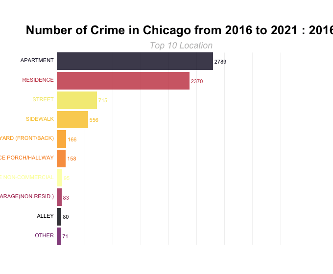

## clean a new dataset with ranking of numbers and adjusted numbers
crime_loc = read.csv("./Data/data_clean.csv") %>%
group_by(year,location_description) %>%
summarise(n = n()) %>%
mutate(rank = rank(-n),
Value_rel = n/n[rank == 1],
Value_lbl = paste0(" ",n)) %>%
filter(rank <= 10)## `summarise()` has grouped output by 'year'. You can override using the `.groups` argument.## form multiple static plots
staticplot = ggplot(crime_loc, aes(rank, group = location_description,
fill = as.factor(location_description), color = as.factor(location_description))) +
geom_tile(aes(y = n / 2,
height = n,
width = 0.9), alpha = 0.8, color = NA) +
geom_text(aes(y = 0, label = paste(location_description, " ")), vjust = 0.2, hjust = 1) +
geom_text(aes(y = n,label = Value_lbl, hjust = 0)) +
coord_flip(clip = "off", expand = FALSE) +
scale_x_reverse() +
scale_fill_viridis_d(option = "B") +
scale_color_viridis_d(option = "B") +
theme_minimal() +
theme(axis.line = element_blank(),
axis.text.x = element_blank(),
axis.text.y = element_blank(),
axis.ticks = element_blank(),
axis.title.x = element_blank(),
axis.title.y = element_blank(),
legend.position = "none",
panel.background = element_blank(),
panel.border = element_blank(),
panel.grid.major = element_blank(),
panel.grid.minor = element_blank(),
panel.grid.major.x = element_line( size = .1, color = "grey" ),
panel.grid.minor.x = element_line( size = .1, color = "grey" ),
plot.title = element_text(size = 25, hjust = 0.5, face = "bold", vjust = 2),
plot.subtitle = element_text(size = 18, hjust = 0.5, face = "italic", color = "grey"),
plot.background = element_blank(),
plot.margin = margin(2,2, 2, 4, "cm"))## convert static plots to animated ones
anim_plot = staticplot +
transition_states(year, transition_length = 4, state_length = 1) +
ease_aes('sine-in-out') +
labs(title = 'Number of Crime in Chicago from 2016 to 2021 : {closest_state}',
subtitle = "Top 10 Location")
animate(anim_plot, 200, fps = 15, width = 680, height = 560)
anim_save("anim.gif")